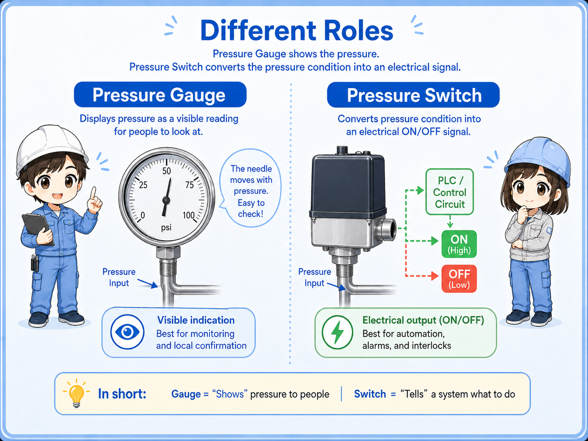
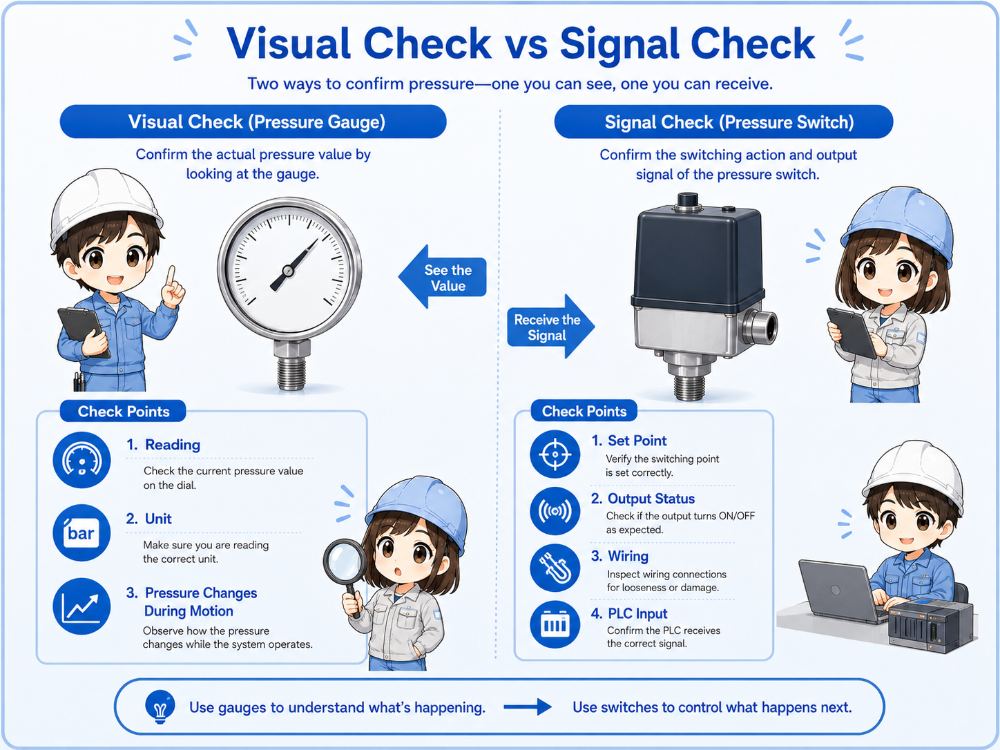
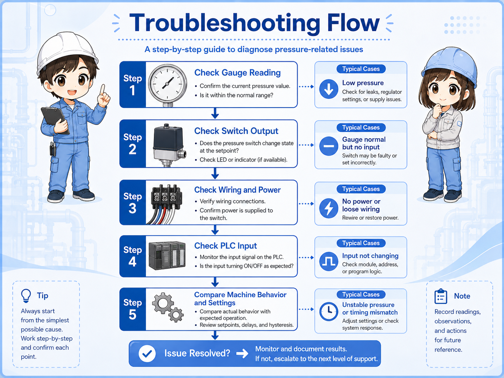
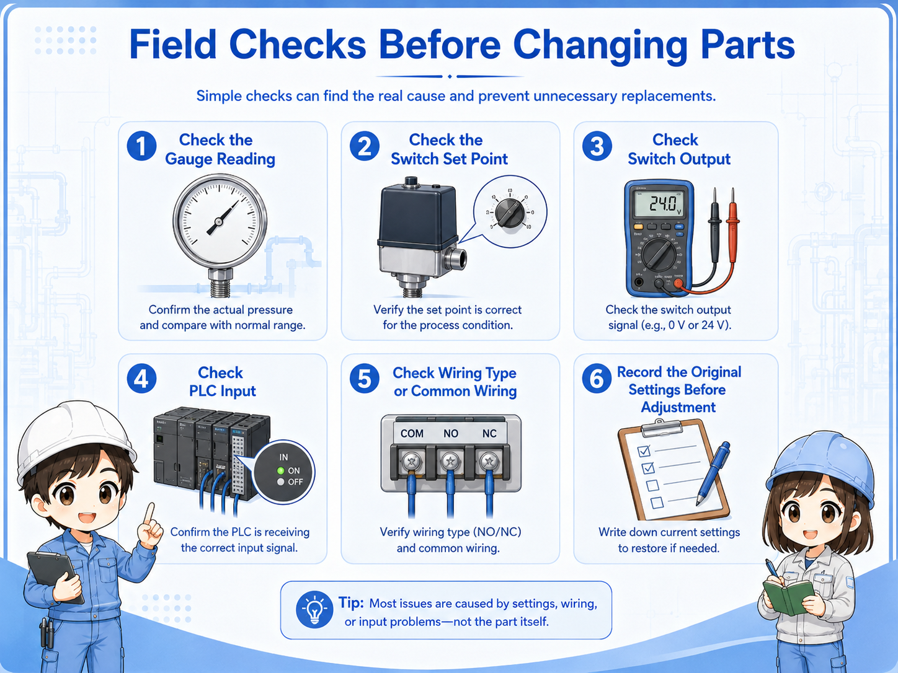

Pressure switch and pressure gauge: what is the difference?
A pressure gauge shows pressure visually. A pressure switch outputs an electrical signal when pressure reaches a set condition.
In pneumatic equipment, the two devices are sometimes installed close to each other, so beginners may think they do the same job. But their purpose is different.
A pressure gauge helps a person read the pressure. A pressure switch helps a control circuit know whether pressure is OK or NG.


A pressure gauge tells your eyes the pressure value. A pressure switch tells the machine whether the pressure condition is met.

So if the PLC input is OFF, I should not only look at the gauge. I also need to check the switch setting, wiring, and input status.
Model details differ
Terminal names, set pressure, output type, display behavior, and wiring differ by manufacturer and model. Always confirm the official manual for the actual device.
Visual check vs signal check
The gauge and switch are useful in different parts of the troubleshooting process.

| Device | Main role | Who or what uses it? | Typical check point |
|---|---|---|---|
| Pressure gauge | Shows pressure value visually. | Technician / operator. | Gauge reading, unit, needle movement, pressure drop. |
| Pressure switch | Turns pressure condition into an ON/OFF signal. | PLC / relay circuit / controller. | Set pressure, output LED, wiring, PLC input monitor. |
| Together | Compare actual pressure and signal result. | Field troubleshooting. | Pressure is present, but signal is OFF / signal is ON, but reading is unstable. |
Do not replace one with the other
A gauge cannot prove that the PLC input is ON. A PLC input cannot prove the pressure is stable at the gauge position. Use both clues together.
Typical use in pneumatic equipment
A pressure gauge is often used for adjustment and confirmation. A pressure switch is often used for interlock or pressure OK signals.
1. Air pressure exists
The gauge helps confirm the visible pressure value.
2. Pressure reaches set point
The switch changes its output state.
3. PLC receives signal
The PLC input can use the pressure OK signal for control logic.
Pressure OK confirmation
A pressure switch can tell the PLC that the required pressure condition has been reached.
Regulator adjustment
A pressure gauge helps a person adjust or confirm the regulator setting.
Abnormal pressure drop
A gauge can show pressure dropping during actuator movement.
Signal mismatch
If pressure looks OK but the PLC input is OFF, check switch setting, wiring, and input common.
Troubleshooting flow when pressure and signal do not match
When the machine says pressure is not OK, check the actual pressure and the signal path separately.

| Symptom | Possible area | First check |
|---|---|---|
| Gauge pressure is low | Air supply, regulator, leak, filter, restriction. | Check supply pressure and regulator setting before checking the switch. |
| Gauge pressure looks OK, but PLC input is OFF | Switch set point, output type, wiring, input common, PLC input. | Check pressure switch output LED and voltage at the PLC input. |
| PLC input is ON, but pressure seems unstable | Gauge location, pressure fluctuation, slow response, local restriction. | Watch the gauge during operation and compare upstream/downstream pressure. |
| Switch changes late or too early | Set pressure, hysteresis, response behavior, wrong device setting. | Confirm the official setting method and actual machine requirement. |
Field checks before changing parts
Before replacing the pressure switch, confirm both the air side and the electrical side.

1. Check the gauge reading
Confirm the pressure value, unit, and whether the value drops during movement.
2. Check the switch set point
Confirm the required setting from the drawing, label, or official manual.
3. Check switch output
Look at the switch LED or measure the output voltage if it is safe and allowed.
4. Check PLC input
Compare terminal voltage, input LED, and PLC monitor status.
5. Check wiring type
Confirm NPN/PNP, common wiring, power supply, and input module type.
6. Record before adjustment
Write down the original setting and pressure value before making changes.
Pressure settings can affect machine behavior
Changing pressure or switch set points can affect force, timing, alarms, and interlocks. Follow site rules and confirm the correct values before adjustment.
Summary
A pressure gauge and a pressure switch are both related to pressure, but they do different jobs. The gauge gives a visual pressure reading. The pressure switch converts a pressure condition into an electrical signal.
In troubleshooting, check both sides. If the gauge value is low, start from the air supply and regulator. If the gauge looks OK but the PLC input is OFF, check the pressure switch setting, output, wiring, and PLC input.
Final takeaway
Use the pressure gauge to understand the real pressure condition, and use the pressure switch signal to understand what the control system is receiving.
Related articles
Read these next to connect pressure readings, pressure signals, and PLC input troubleshooting.